Problema
Crear una experiencia VR que combine un objetivo claro, interacción física con armas, amenazas legibles y una ambientación inmersiva.
Interacción Humano-Computador
Juego de supervivencia zombie en realidad virtual
Prototipo de supervivencia zombie en realidad virtual ambientado entre una cabaña y su entorno exterior. Integra oleadas de enemigos, combate con armas mediante seguimiento de manos, lluvia, relámpagos y transmisiones de radio.
VISTA GENERAL
El último en pie es un prototipo de supervivencia zombie para realidad virtual. El proyecto combina una cabaña ambientada, un exterior lluvioso, combate con seguimiento de manos y supervivencia por oleadas.
Crear una experiencia VR que combine un objetivo claro, interacción física con armas, amenazas legibles y una ambientación inmersiva.
Un prototipo en Unity con cabaña y exterior lluvioso, mensajes de radio, armas manipulables con hand tracking y oleadas de zombies de distintos tipos.
Lluvia de ideas, categorización, storyboard, actuación del flujo del juego, desarrollo por responsabilidades, integración de sistemas y pruebas iterativas con usuarios, junto con validación técnica planificada en el visor.
El prototipo integra cinco configuraciones de oleadas, supervivencia durante 180 segundos, salud del jugador y condiciones de victoria y derrota. La validación final de seguimiento de manos y físicas en Quest sigue pendiente.
01 / EQUIPO
El proyecto fue desarrollado por un equipo de cuatro integrantes. El trabajo se dividió entre el escenario interior, los zombies y sus oleadas, el entorno exterior y clima, y el seguimiento de manos y las armas VR.
Escenario interior y ambientación
Diseñó la cabaña y el escenario interior. Se encargó de la iluminación, los objetos de la cabaña y los sonidos de la radio.
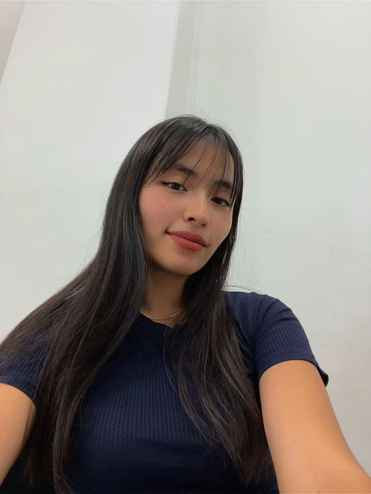
Zombies y sistema de oleadas
Desarrolló los zombies, sus animaciones y su comportamiento, además del sistema de oleadas y los distintos tipos de enemigos.
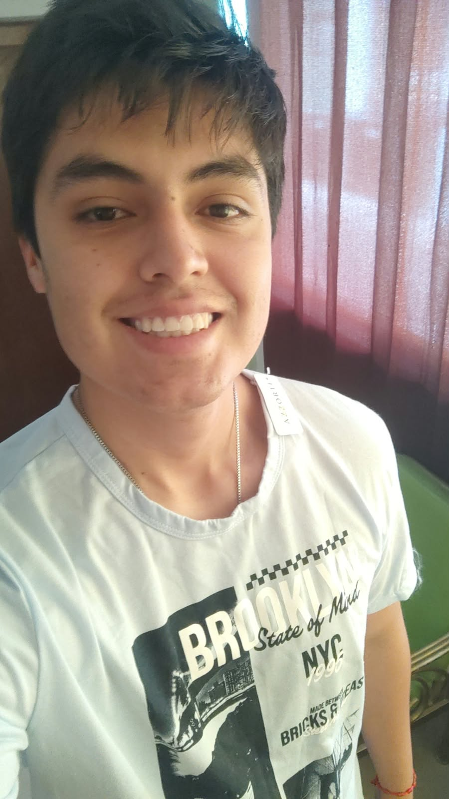
Seguimiento de manos y armas VR
Implementó el hand tracking y las armas —hacha, bate, pistola y escopeta—, ajustando su agarre, interacción y física con los objetos.
Escenario exterior y clima
Trabajó en el escenario exterior y sus elementos ambientales, incluida la lluvia y su sonido, además de otros detalles del entorno.
02 / DESARROLLO
A continuación se muestran los hitos más importantes del proceso. En cada etapa se resume qué se hizo, qué aprendimos y cómo fue evolucionando la propuesta hasta convertirse en un videojuego más definido y funcional.
El proyecto comenzó con una lluvia de ideas en la que cada integrante propuso distintas posibilidades para el videojuego. Esta etapa nos permitió explorar conceptos, mecánicas y experiencias antes de elegir una dirección definitiva.
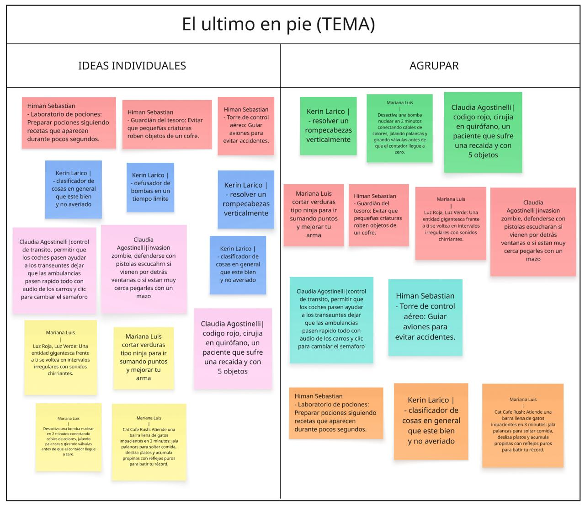
Organizamos las propuestas por categorías, identificando similitudes, posibilidades técnicas y elementos en común. Después de comparar las alternativas logramos llegar a una idea final con la que todo el equipo estuvo de acuerdo.

Presentamos en clase el cuadro correspondiente a nuestra idea final. La propuesta debía cumplir varios requisitos definidos durante el curso, por lo que llegar a una versión que integrara todas las condiciones fue uno de los primeros retos importantes.
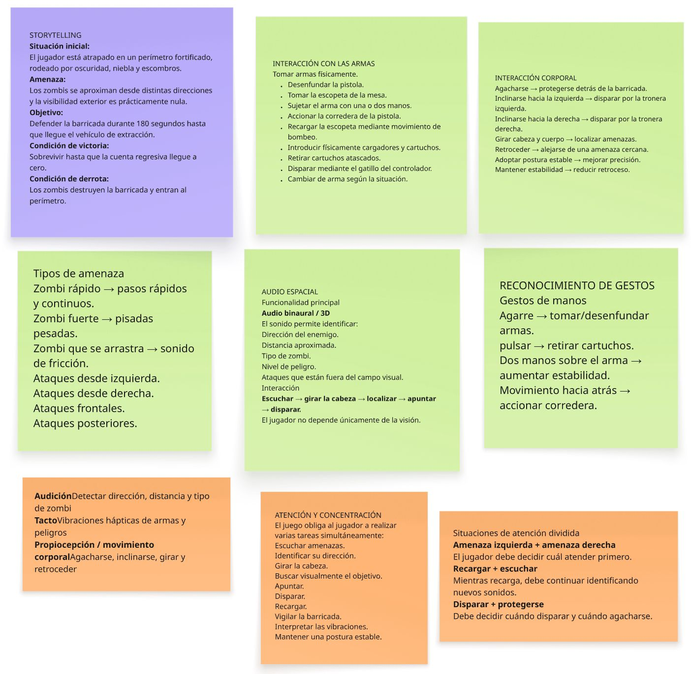
Comenzamos la implementación utilizando Unity y los lentes Oculus. La configuración inicial de realidad virtual, controladores y entorno de ejecución presentó varios problemas, pero finalmente logramos establecer una base funcional para desarrollar el videojuego.
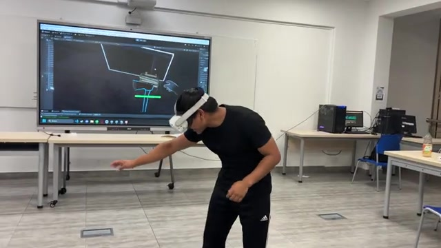
Como parte del proceso de diseño desarrollamos el storytelling y el storyboard del juego. El equipo se reunió durante el fin de semana para representar mediante dibujos el recorrido, las situaciones y las principales interacciones del jugador.
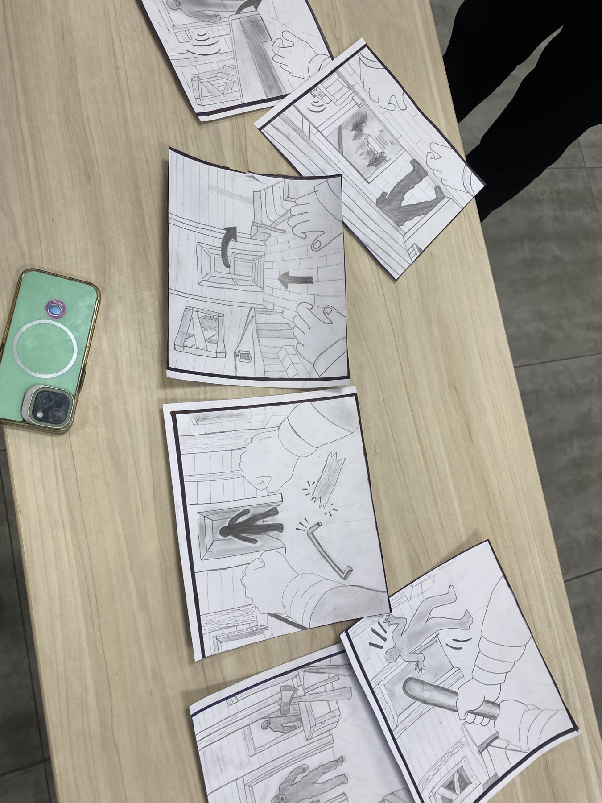
Presentamos el storyboard en clase con una dinámica particular: nuestros compañeros debían interpretar de qué trataba el juego observando únicamente los dibujos. La actividad permitió comprobar que la propuesta podía entenderse visualmente sin explicaciones adicionales.
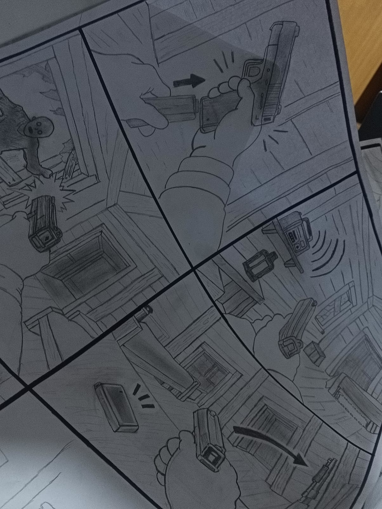
Antes de contar con una versión completa del videojuego, realizamos una prueba actuada para observar cómo reaccionaría una persona ante las situaciones planteadas. Nos caracterizamos como zombies, utilizamos armas de juguete y recreamos diferentes momentos del juego con un usuario que no conocía previamente la propuesta.
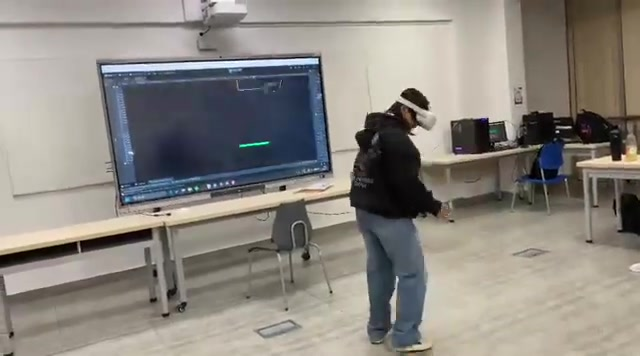
La retroalimentación obtenida durante las primeras pruebas amplió nuestra perspectiva sobre la experiencia que queríamos construir. A partir de estas observaciones comenzamos a ajustar decisiones de diseño y a desarrollar el videojuego de manera más concreta.
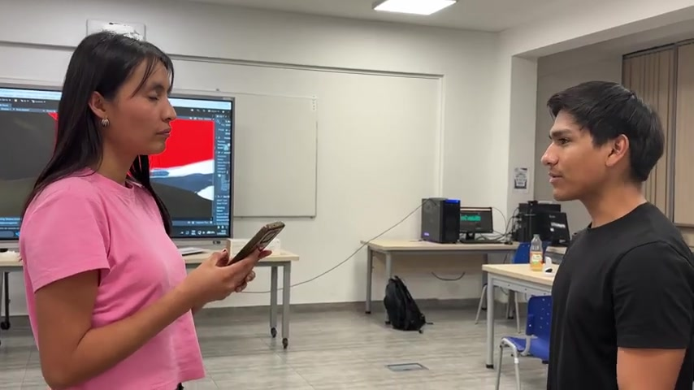
Dividimos el trabajo por sistemas e integramos el escenario interior y exterior, la radio, el clima, los zombies por oleadas y el combate con armas VR. El proyecto también incorpora daño, salud del jugador y condiciones de victoria o derrota; la aceptación final del hand tracking y las físicas en Quest está documentada como pendiente.
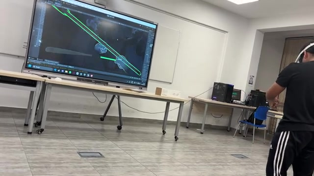
Presentamos una versión funcional del avance del videojuego frente a la clase. Las observaciones de la profesora y de los compañeros sirvieron para detectar aspectos que todavía podían mejorar y orientar las siguientes iteraciones del proyecto.
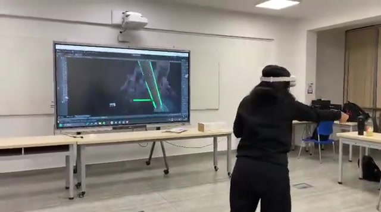
03 / PRUEBAS
Se registraron siete videos con cuatro usuarios para observar la comprensión del juego, el uso de armas, las señales de audio y la inmersión en el entorno de realidad virtual.
Entrevista sobre el ingreso a la cabaña, las señales de radio, el uso de armas y la dificultad inicial.
Registro complementario de la sesión de prueba del usuario 01.
Registro de la prueba de juego con el usuario 02.
Preguntas sobre la ambientación, el agarre de las armas, la dificultad del combate y la claridad de las instrucciones de audio.
Registro de la prueba de juego con el usuario 03.
Entrevista sobre la inmersión, el ambiente, el uso de armas y la progresión de los zombies.
Registro de la prueba de juego con el usuario 04.
04 / FEEDBACK
Después de las pruebas realizamos entrevistas breves para conocer la percepción de los usuarios respecto al juego, su nivel de inmersión, los aspectos que más llamaron su atención y los puntos que debían mejorar.
Las pistas de radio y la señal visual de daño le ayudaron a comprender la situación. Al inicio le costó agarrar y orientar las armas; sugirió revisar la vida del zombie grande y que las armas no se caigan.
Mejora: añadir una introducción breve al manejo de armas y revisar su estabilidad física.
El sonido de los zombies y las armas disponibles le ayudaron a entender que debía defenderse. Valoró poder cambiar de arma cuando perdió el bate, aunque le costó sujetar y orientar la pistola. Consideró el combate equilibrado, pero pidió un jefe final más difícil y una instrucción de la bengala más audible. No reportó mareos ni incomodidad durante la sesión.
Mejora: corregir el agarre y la orientación de la pistola, reforzar el aviso de la bengala y ajustar la dificultad del jefe final.
Destacó el sonido, la iluminación y la aparición inesperada de zombies. Percibió una progresión entre enemigos y encontró más intuitivo golpear con el bate o el hacha que agarrar y apuntar con la pistola.
Mejora: conservar la ambientación y simplificar el agarre y la orientación de la pistola.